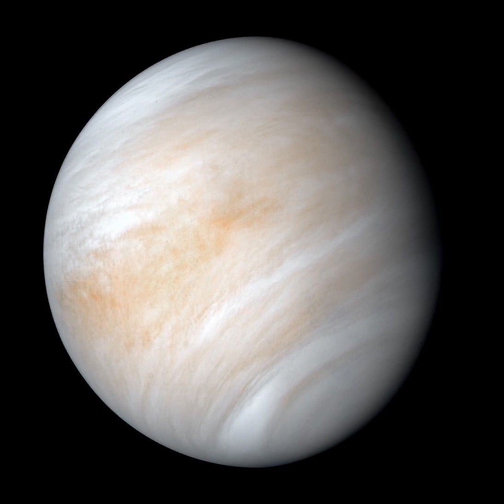
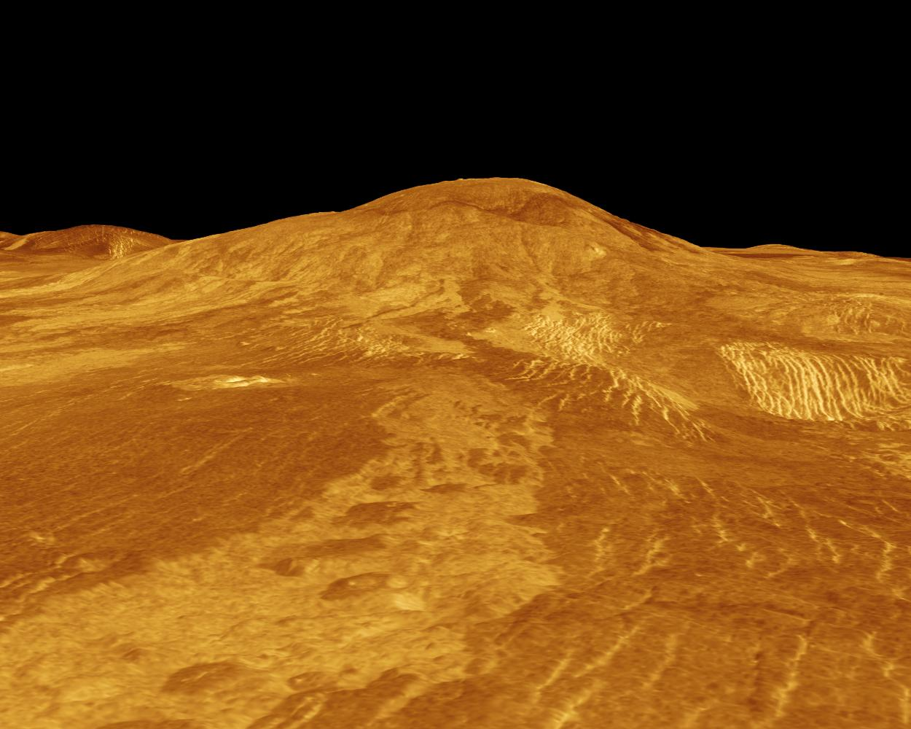
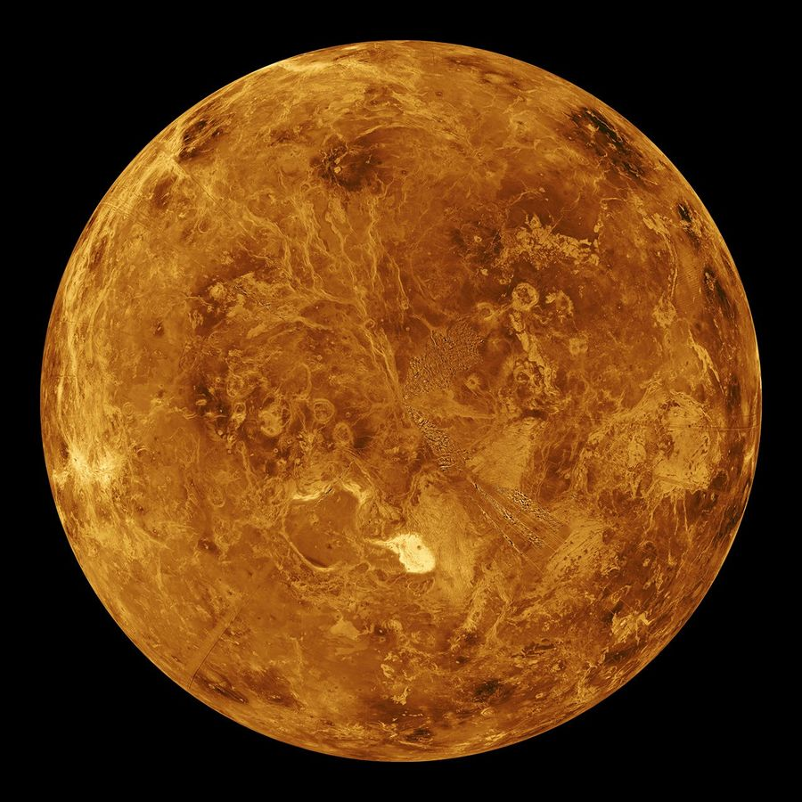
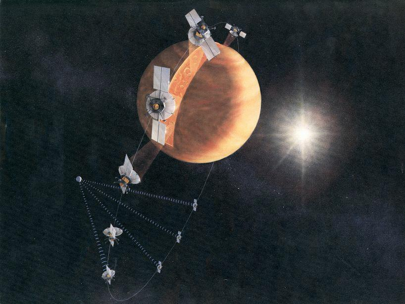

DEN ANDRE PLANETEN FRA SOLA
Venus
På morgenhimmelen lyser Venus som en stjerne. Under skyene er det rundt 467 °C, varmt nok til å smelte bly.
Se under skydekket ↓


Under skydekket
Skyer av svovelsyre skjuler landskapet. Med radar kunne romsonden Magellan kartlegge bakken gjennom skyene.
Det store bildet viser Sif Mons, en vulkan som er omtrent 300 kilometer bred. Det lille viser et radarkart av Venus.
Over vulkanen Idunn Mons
NASAs animasjon viser vulkanen slik den ser ut i radardataene. Rødt og oransje markerer de varmeste områdene.
Veien til Venus
I 1962 fløy Mariner 2 forbi Venus. I 1970 sendte Venera 7 de første målingene fra bakken på en annen planet.
I 1990 gikk Magellan inn i bane rundt Venus. Radaren kartla omtrent 98 prosent av overflaten.
